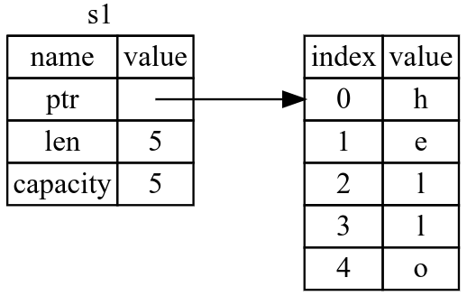
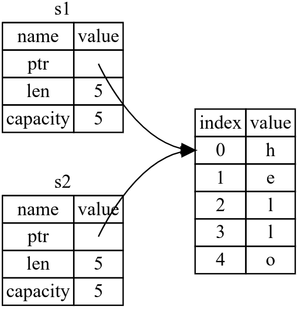
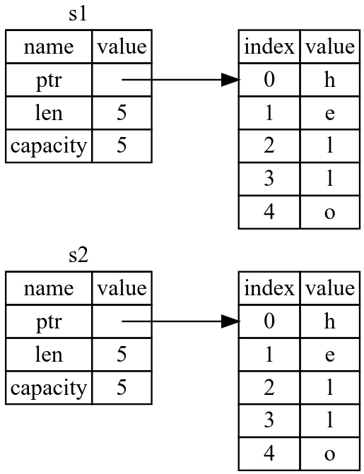
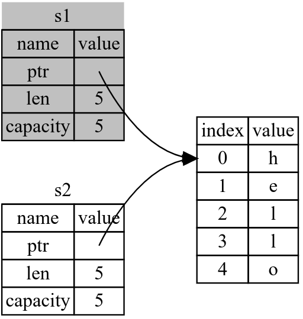
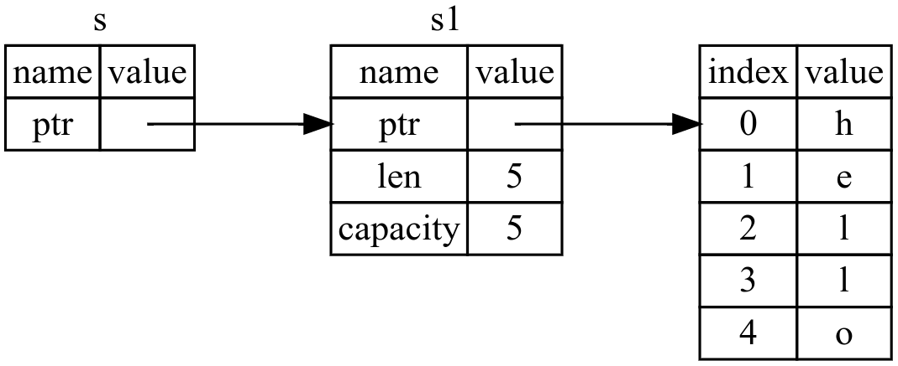
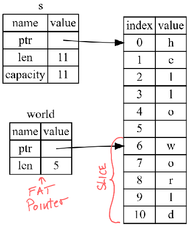

Kreirano 2022-05-29 Sun 19:22, pritisni ESC za mapu, m za meni, Ctrl+Shift+F za pretragu
rustup$ curl --proto '=https' --tlsv1.2 https://sh.rustup.rs -sSf | sh
~> rustc --version
rustc 1.58.1 (db9d1b20b 2022-01-20)
~> rustup show
Default host: x86_64-unknown-linux-gnu
rustup home: /home/igor/.rustup
installed toolchains
--------------------
stable-x86_64-unknown-linux-gnu (default)
nightly-x86_64-unknown-linux-gnu
active toolchain
----------------
stable-x86_64-unknown-linux-gnu (default)
rustc 1.58.1 (db9d1b20b 2022-01-20)
Za ažuriranje instalacije na najnoviju verziju
rustup update
Rust stiže sa veoma dobrom dokumentacijom i knjigama koje su dostupne direktno iz instalacije.
rustup doc
$ mkdir hello_world
$ cd hello_world
File main.rs:
fn main() {
println!("Hello, world!");
}
$ rustc main.rs
$ ./main
Hello, world!
~> cargo --version
cargo 1.58.0 (f01b232bc 2022-01-19)
cargo alatom:$ cargo new hello_cargo
$ cd hello_cargo
Fajl cargo.toml čuva konfiguraciju projekta. Format je TOML (Tom’s Obvious,
Minimal Language):
[package]
name = "hello_cargo"
version = "0.1.0"
edition = "2021"
[dependencies]
Fajl src/main.rs:
fn main() {
println!("Hello, world!");
}
$ cargo build
Compiling hello_cargo v0.1.0 (file:///projects/hello_cargo)
Finished dev [unoptimized + debuginfo] target(s) in 2.85 secs
Izvršni fajl se može naći na lokaciji target/debug/hello_cargo:
$ ./target/debug/hello_cargo
Hello, world!
Ali cargo omgućava i jednostavniji način pokretanja:
$ cargo run
Finished dev [unoptimized + debuginfo] target(s) in 0.0 secs
Running `target/debug/hello_cargo`
Hello, world!
Takođe je moguće brzo proveriti da li se kod kompajlira:
$ cargo check
Checking hello_cargo v0.1.0 (file:///projects/hello_cargo)
Finished dev [unoptimized + debuginfo] target(s) in 0.32 secs
Za finalnu verziju je potrebno izgradnju obaviti na sledeći način:
cargo build --release
Praktično svi Rust projekti koriste Cargo tako da je unifikovan način izgradnje projekata. Uglavnom se svodi na:
$ git clone example.org/someproject
$ cd someproject
$ cargo build
$ cargo new guessing_game
$ cd guessing_game
Fajl Cargo.toml:
[package]
name = "guessing_game"
version = "0.1.0"
edition = "2021"
[dependencies]
Fajl src/main.rs:
fn main() {
println!("Hello, world!");
}
$ cargo run
Compiling guessing_game v0.1.0 (file:///projects/guessing_game)
Finished dev [unoptimized + debuginfo] target(s) in 1.50s
Running `target/debug/guessing_game`
Hello, world!
use std::io;
fn main() {
println!("Guess the number!");
println!("Please input your guess.");
let mut guess = String::new();
io::stdin()
.read_line(&mut guess)
.expect("Failed to read line");
println!("You guessed: {}", guess);
}
Ukoliko želimo varijablu čija vrednost može da se menja koristimo ključnu reč
mut.
let apples = 5; // immutable
let mut bananas = 5; // mutable
Isto važi i za parametre funkcija:
io::stdin()
.read_line(&mut guess)
Result tipa
read_line može da završi neuspešno. Zato vraća io::Result tip koji predstavlja
enumeraciju (enum) tip i ima dve vrednosti: Ok i Err.
io::stdin()
.read_line(&mut guess)
.expect("Failed to read line");
expect implementiran na Ok varijanti će vratiti vrednost koja je sadržana unutar
varijante dok implementacija nad Err varijanti prekida izvršavanje programa.
$ cargo run
Compiling guessing_game v0.1.0 (file:///projects/guessing_game)
Finished dev [unoptimized + debuginfo] target(s) in 6.44s
Running `target/debug/guessing_game`
Guess the number!
Please input your guess.
6
You guessed: 6
Koristimo rand paket (sanduk - crate u terminologiji Cargo-a).
Sekcija [dependencies] u fajlu Cargo.toml:
[dependencies]
rand = "0.8.3"
$ cargo build
Updating crates.io index
Downloaded rand v0.8.3
Downloaded libc v0.2.86
...
Compiling rand_chacha v0.3.0
Compiling rand v0.8.3
Compiling guessing_game v0.1.0 (file:///projects/guessing_game)
Finished dev [unoptimized + debuginfo] target(s) in 2.53s
Cargo koristi Semantic Versioning. Rust paketi se preuzimaju sa sajta crates.io i keširaju lokalno.
cargo build kreira se fajl Cargo.lock sa
informacijama o verzijama svih sanduka koji su instalirani.Cargo.lock je potrebno čuvati u sistemu kontrole verzija (npr. git) da bi se
osigurala ponovljivost.Ažuriranje na nove verzije sanduka se obavlja sa:
$ cargo update
Updating crates.io index
Updating rand v0.8.3 -> v0.8.4
Cargo.toml fajlu.
Fajl src/main.rs:
use std::io;
use rand::Rng;
fn main() {
println!("Guess the number!");
let secret_number = rand::thread_rng().gen_range(1..101);
println!("The secret number is: {}", secret_number);
println!("Please input your guess.");
let mut guess = String::new();
io::stdin()
.read_line(&mut guess)
.expect("Failed to read line");
println!("You guessed: {}", guess);
}
U gen_range koristimo izraz opsega (range expression). Interval je zatvoren na
donjoj granici i otvoren na gornjoj. Za interval zatvoren i od gore možemo
pisati 1..=100.
Da bi znali koje metode i funkcije su nam dostupne možemo koristiti ugrađenu dokumentaciju za sanduke projekta. Dokumentaciju dobijamo sa:
cargo doc --open
$ cargo run
Compiling guessing_game v0.1.0 (file:///projects/guessing_game)
Finished dev [unoptimized + debuginfo] target(s) in 2.53s
Running `target/debug/guessing_game`
Guess the number!
The secret number is: 7
Please input your guess.
4
You guessed: 4
Fajl src/main.rs
use rand::Rng;
use std::cmp::Ordering;
use std::io;
fn main() {
// --snip--
println!("You guessed: {}", guess);
match guess.cmp(&secret_number) {
Ordering::Less => println!("Too small!"),
Ordering::Greater => println!("Too big!"),
Ordering::Equal => println!("You win!"),
}
}
std::cmp::Ordering enum koji ima varijante Less, Greater i Equalmatch izraz poredi zadatu vrednost sa vrednostima zadatim u telu i izvršava
granu koja se podudara. Grane match izraza se u Rust terminologiji zovu “ruke” (arms).Kod sa prethodnog slajda nije ispravan:
$ cargo build
Compiling libc v0.2.86
...
Compiling guessing_game v0.1.0 (file:///projects/guessing_game)
error[E0308]: mismatched types
--> src/main.rs:22:21
|
22 | match guess.cmp(&secret_number) {
| ^^^^^^^^^^^^^^ expected struct `String`, found integer
|
= note: expected reference `&String`
found reference `&{integer}`
error[E0283]: type annotations needed for `{integer}`
--> src/main.rs:8:44
|
8 | let secret_number = rand::thread_rng().gen_range(1..101);
| ------------- ^^^^^^^^^ cannot infer type for type `{integer}`
| |
| consider giving `secret_number` a type
|
= note: multiple `impl`s satisfying `{integer}: SampleUniform` found in the `rand` crate:
- impl SampleUniform for i128;
- impl SampleUniform for i16;
- impl SampleUniform for i32;
- impl SampleUniform for i64;
and 8 more
...
Osnova greške je neslaganje tipova. Sa ulaza prihvatamo String dok nam je tajni
broj integer.
Problem rešavamo konverzijom stringa sa ulaza u brojni tip.
// --snip--
let mut guess = String::new();
io::stdin()
.read_line(&mut guess)
.expect("Failed to read line");
let guess: u32 = guess.trim().parse().expect("Please type a number!");
println!("You guessed: {}", guess);
match guess.cmp(&secret_number) {
Ordering::Less => println!("Too small!"),
Ordering::Greater => println!("Too big!"),
Ordering::Equal => println!("You win!"),
}
Sada se program komapajlira.
$ cargo run
Compiling guessing_game v0.1.0 (file:///projects/guessing_game)
Finished dev [unoptimized + debuginfo] target(s) in 0.43s
Running `target/debug/guessing_game`
Guess the number!
The secret number is: 58
Please input your guess.
76
You guessed: 76
Too big!
Fajl src/main.rs:
// --snip--
println!("The secret number is: {}", secret_number);
loop {
println!("Please input your guess.");
// --snip--
match guess.cmp(&secret_number) {
Ordering::Less => println!("Too small!"),
Ordering::Greater => println!("Too big!"),
Ordering::Equal => println!("You win!"),
}
}
}
Problem je kako prekinuti program kada korisnik pogodi broj?
// --snip--
match guess.cmp(&secret_number) {
Ordering::Less => println!("Too small!"),
Ordering::Greater => println!("Too big!"),
Ordering::Equal => {
println!("You win!");
break;
}
}
}
}
// --snip--
io::stdin()
.read_line(&mut guess)
.expect("Failed to read line");
let guess: u32 = match guess.trim().parse() {
Ok(num) => num,
Err(_) => continue,
};
println!("You guessed: {}", guess);
// --snip--
Potrebno je još obrisati liniju koja prikazuje generisani broj.
use rand::Rng;
use std::cmp::Ordering;
use std::io;
fn main() {
println!("Guess the number!");
let secret_number = rand::thread_rng().gen_range(1..101);
loop {
println!("Please input your guess.");
let mut guess = String::new();
io::stdin()
.read_line(&mut guess)
.expect("Failed to read line");
let guess: u32 = match guess.trim().parse() {
Ok(num) => num,
Err(_) => continue,
};
println!("You guessed: {}", guess);
match guess.cmp(&secret_number) {
Ordering::Less => println!("Too small!"),
Ordering::Greater => println!("Too big!"),
Ordering::Equal => {
println!("You win!");
break;
}
}
}
}
Jednom kada dobiju vrednost (binding) ta vrednost se ne može promeniti
fn main() {
let x = 5;
println!("The value of x is: {}", x);
x = 6; // greška
println!("The value of x is: {}", x);
}
$ cargo run
Compiling variables v0.1.0 (file:///projects/variables)
error[E0384]: cannot assign twice to immutable variable `x`
--> src/main.rs:4:5
|
2 | let x = 5;
| -
| |
| first assignment to `x`
| help: consider making this binding mutable: `mut x`
3 | println!("The value of x is: {}", x);
4 | x = 6;
| ^^^^^ cannot assign twice to immutable variable
For more information about this error, try `rustc --explain E0384`.
error: could not compile `variables` due to previous error
mut ključna rečfn main() {
let mut x = 5;
println!("The value of x is: {}", x);
x = 6;
println!("The value of x is: {}", x);
}
constPo konvenciji imena konstanti se pišu velikim slovima
const THREE_HOURS_IN_SECONDS: u32 = 60 * 60 * 3;
Kompajler će probati da odredi tipove (type inference). Ako nije moguće zahteva se da definišemo tip eksplicitno.
Npr:
let guess: u32 = "42".parse().expect("Not a number!");
Ovde nije moguće odrediti tip jer str::parse funkcija može vratiti različite
brojne tipove (funkcija je generička) a ne postoji način da se tip automatski
odredi.
Signatura je:
pub fn parse<F>(&self) -> Result<F, <F as FromStr>::Err>
where
F: FromStr
| Dužina | Signed | Unsigned |
|---|---|---|
| 8-bit | i8 | u8 |
| 16-bit | i16 | u16 |
| 32-bit | i32 | u32 |
| 64-bit | i64 | u64 |
| 128-bit | i128 | u128 |
| arch | isize | usize |
| Literali | Primeri |
|---|---|
| Decimal | 98_222 |
| Hex | 0xff |
| Octal | 0o77 |
| Binary | 0b1111_0000 |
| Byte (u8 only) | b’A’ |
fn main() {
let x = 2.0; // f64
let y: f32 = 3.0; // f32
}
IEEE-754 standard
fn main() {
// addition
let sum = 5 + 10;
// subtraction
let difference = 95.5 - 4.3;
// multiplication
let product = 4 * 30;
// division
let quotient = 56.7 / 32.2;
let floored = 2 / 3; // Results in 0
// remainder
let remainder = 43 % 5;
}
fn main() {
let t = true;
let f: bool = false; // with explicit type annotation
}
fn main() {
let c = 'z';
let z = 'ℤ';
let heart_eyed_cat = '😻';
}
fn main() {
let tup: (i32, f64, u8) = (500, 6.4, 1);
}
fn main() {
let tup = (500, 6.4, 1);
let (x, y, z) = tup;
println!("The value of y is: {}", y);
}
Pristup elementima torke:
fn main() {
let x: (i32, f64, u8) = (500, 6.4, 1);
let five_hundred = x.0;
let six_point_four = x.1;
let one = x.2;
}
Dimenzija niza je nepromenjiva (alociran je na steku)
fn main() {
let a = [1, 2, 3, 4, 5];
}
Tip se može eksplitino definisati na sledeći način (niz dužine 5 tipa i32):
let a: [i32; 5] = [1, 2, 3, 4, 5];
Inicijalizacija svih elemenata na istu vrednost se obavlja na sledeći način:
let a = [3; 5];
Gde je vrednost svakog elementa 3 a dužina niza 5.
Indeksni pristup:
fn main() {
let a = [1, 2, 3, 4, 5];
let first = a[0];
let second = a[1];
}
fn main() {
println!("Hello, world!");
another_function();
}
fn another_function() {
println!("Another function.");
}
fn main() {
print_labeled_measurement(5, 'h');
}
fn print_labeled_measurement(value: i32, unit_label: char) {
println!("The measurement is: {}{}", value, unit_label);
}
Primer: let je iskaz tj. nema povratnu vrednost. Ovo možete pisati:
let y = 6;
Ali ovo ne:
let x = (let y = 6);
Blok koda je takođe izraz. Šta je vrednost u koju se evaluira?
{
let x = 3;
x + 1
}
Vrednost bloka je vrednost poslednjeg izraza, tj. x+1. Primetite da tu ne
koristimo ; jer terminacija ovim karakterom pretvara izraz u iskaz.
Zbog ovoga je sasvim legalno da pišemo:
fn main() {
let y = {
let x = 3;
x + 1
};
println!("The value of y is: {}", y);
}
The value of y is: 4
Vrednost funkcije je vrednost bloka koji predstavlja telo funkcije, dakle poslednjeg izraza unutar tela funkcije.
fn five() -> i32 {
5
}
fn main() {
let x = five();
println!("The value of x is: {}", x);
}
The value of x is: 5
Ili na primer:
fn main() {
let x = plus_one(5);
println!("The value of x is: {}", x);
}
fn plus_one(x: i32) -> i32 {
x + 1
}
The value of x is: 6
Ukoliko izraz x+1 terminiramo sa ; kod se neće kompajlirati jer funkcija
deklariše da vraća tip i32 dok sada vraća () (tzv. unit type) odnosno nema
povratnu vrednost jer je poslednja instrukcija iskaz.
fn main() {
let x = plus_one(5);
println!("The value of x is: {}", x);
}
fn plus_one(x: i32) -> i32 {
x + 1;
}
error[E0308]: mismatched types
--> src/main.rs:8:24
|
8 | fn plus_one(x: i32) -> i32 {
| -------- ^^^ expected `i32`, found `()`
| |
| implicitly returns `()` as its body has no tail or `return` expression
9 | x + 1;
| - help: consider removing this semicolon
For more information about this error, try `rustc --explain E0308`.
error: could not compile `cargo4UyKF0` due to previous error
Komentari se pišu posle // ili u formi blok komentara /*.... */ kao i u C++-u.
Ovo bi bili validni komentari:
// So we’re doing something complicated here, long enough that we need
// multiple lines of comments to do it! Whew! Hopefully, this comment will
// explain what’s going on.
fn main() {
let lucky_number = 7; // I’m feeling lucky today
}
...
fn main() {
// I’m feeling lucky today
let lucky_number = 7;
/* this is block comment
which can span multiple lines.
Nesting is allowed.
*/
}
Postoje i komentari za dokumentaciju koji predstavljaju posebnu sintaksu za
komentare koji su deo API dokumentacije. Oni se pišu posle ///. Na primer:
/// Adds one to the number given.
///
/// # Examples
///
/// ```
/// let arg = 5;
/// let answer = my_crate::add_one(arg);
///
/// assert_eq!(6, answer);
/// ```
pub fn add_one(x: i32) -> i32 {
x + 1
}
if izrazifn main() {
let number = 3;
if number < 5 {
println!("condition was true");
} else {
println!("condition was false");
}
}
if-elsefn main() {
let number = 6;
if number % 4 == 0 {
println!("number is divisible by 4");
} else if number % 3 == 0 {
println!("number is divisible by 3");
} else if number % 2 == 0 {
println!("number is divisible by 2");
} else {
println!("number is not divisible by 4, 3, or 2");
}
}
if u let iskazima
if je izraz pa se može koristiti gde god možemo pisati i bilo koji drugi izraz.
fn main() {
let condition = true;
let number = if condition { 5 } else { 6 };
println!("The value of number is: {}", number);
}
The value of number is: 5
Ali se grane moraju slagati po tipu. Ovo je pogrešno jer je prva grana tipa
i32 dok je else grana tipa str.
fn main() {
let condition = true;
let number = if condition { 5 } else { "six" };
println!("The value of number is: {}", number);
}
Rust ima tri tipa petlje:
loop - za beskontačne petljewhile - uslovna petljafor - petlja za iteraciju kroz iteratoreloopfn main() {
loop {
println!("again!");
}
}
loop labele
Ukoliko imamo ugnježdene loop iskaze možemo koristiti labele prilikom izlaska sa
break instrukcijom.
fn main() {
let mut count = 0;
'counting_up: loop {
println!("count = {}", count);
let mut remaining = 10;
loop {
println!("remaining = {}", remaining);
if remaining == 9 {
break;
}
if count == 2 {
break 'counting_up;
}
remaining -= 1;
}
count += 1;
}
println!("End count = {}", count);
}
loop kao izraz
loop može imati povratnu vrednost. Povratna vrednost se definiše kao parametar
break instrukcije.
fn main() {
let mut counter = 0;
let result = loop {
counter += 1;
if counter == 10 {
break counter * 2;
}
};
println!("The result is {}", result);
}
whilefn main() {
let mut number = 3;
while number != 0 {
println!("{}!", number);
number -= 1;
}
println!("LIFTOFF!!!");
}
for
Iteraciju kroz uređenu kolekciju, kao što je niz, možemo obaviti sa while petljom.
fn main() {
let a = [10, 20, 30, 40, 50];
let mut index = 0;
while index < 5 {
println!("the value is: {}", a[index]);
index += 1;
}
}
Ali je za tu namenu prirodnije i sigurnije koristiti for petlju. Takođe će se
program brže izvršavati.
fn main() {
let a = [10, 20, 30, 40, 50];
for element in a {
println!("the value is: {}", element);
}
}
for petlje su najčešći oblik petlji u upotrebi u Rust-u. Koriste se npr. i u
situaciji kada je potrebno izvršiti petlju određeni broj puta.
fn main() {
for number in (1..4).rev() {
println!("{}!", number);
}
println!("LIFTOFF!!!");
}
3! 2! 1! LIFTOFF!!!
{ // s nije validno ovde jer još nije deklarisano
let s = "hello"; // s je validno od ove pozicije
// koristimo s
} // ovde opseg prestaje da važi i s više nije validno
String tipDemonstracija vlasništva nad tipom koji se alocira na hipu.
let mut s = String::from("hello");
s.push_str(", world!"); // push_str() dodaje literal na string
println!("{}", s); // hello, world!`
Alokacija stringa se obavlja na liniji:
let mut s = String::from("hello");
Poziva se funkcija drop nad tipom i ova funkcija je zadužena da obavi dealokaciju.
{
let s = String::from("hello"); // s postaje validno
// koristimo s
} // <- s izlazi iz opsega i poziva se "drop"
Kopiranje vrednosti x u y. Obe varijable sada imaju vrednost 5.
let x = 5;
let y = x;
Ali sa String tipom dešava se nešto drugo.
let s1 = String::from("hello");

Ako bi se kopirao samo sadržaj sa steka bez imali bismo sledeću situaciju (tzv. shallow copy).
let s1 = String::from("hello");
let s2 = s1;

Što je problematično jer kada i s1 i s2 napuste opseg pokušaće se dvostruka
dealokacija iste memorije na hipu (double free).
Ako bi se i hip memorija kopirala (tzv. deep copy) imali bismo validnu situaciju ali bi takva operacija bila veoma “skupa”.

Ako probamo da kompajliramo sledeći kod:
let s1 = String::from("hello");
let s2 = s1;
println!("{}, world!", s1);
Dobićemo grešku:
$ cargo run
Compiling ownership v0.1.0 (file:///projects/ownership)
error[E0382]: borrow of moved value: `s1`
--> src/main.rs:5:28
|
2 | let s1 = String::from("hello");
| -- move occurs because `s1` has type `String`, which does not implement the `Copy` trait
3 | let s2 = s1;
| -- value moved here
4 |
5 | println!("{}, world!", s1);
| ^^ value borrowed here after move
For more information about this error, try `rustc --explain E0382`.
error: could not compile `ownership` due to previous error
Ono što nam kompajler kaže je da se u iskazu:
let s2 = s1;
promenio vlasnik ovog stringa. Novi vlasnik je sada s2 dok je varijabla s1
postala nevalidna i nije je više moguće koristiti.
Kažemo da se obavilo “premeštanje” (move) vrednosti iz s1 u s2.

Čime se ispunjava prvo pravilo vlasništva i sprečava double free greška.
Posledica prethodnog je da Rust nikada neće automatski obaviti duboko kopiranje varijable jer bi to moglo da izazove loše performanse.
Duboko kopiranje (stek+hip) radimo sa clone metodom:
let s1 = String::from("hello");
let s2 = s1.clone();
println!("s1 = {}, s2 = {}", s1, s2);
Sada je lako pronaći u kodu sva mesta gde se obavlja potencijalno “skupa” operacija dubokog kopiranja.
Kako onda radi primer koji smo videli prethodno? Zašto ne dolazi do premeštanja
i invalidacije y varijable?
let x = 5;
let y = x;
println!("x = {}, y = {}", x, y);
fn main() {
let s = String::from("hello"); // s postaje validno
takes_ownership(s); // s vrednost se premešta u funkciju...
// ... tako da s nije validno od ove pozicije
let x = 5; // x postaje validno
makes_copy(x); // x bi se premestilo u funkciju,
// ali i32 je Copy, tako da je ok
// da se x koristi i posle
} // x izlazi iz opsega, zatim s. Ali pošto je s premešteno ništa posebno se
// ne dešava.
fn takes_ownership(some_string: String) { // some_string ulazi u opseg
println!("{}", some_string);
} // some_string izlazi iz opsega i poziva se `drop`. Memorija sa hipa se
// oslobađa.
fn makes_copy(some_integer: i32) { // some_integer ulazi u opseg
println!("{}", some_integer);
} // some_integer izlazi iz opsega. Pošto nije 'Drop', ništa posebno se ne
// događa (osim "skidanja" sa steka naravno)
Prilikom vraćanja vrednosti iz funkcije takođe može doći do premeštanja vlasništva.
fn main() {
let s1 = gives_ownership(); // gives_ownership premešta povratnu
// vrednost u s1
let s2 = String::from("hello"); // s2 postaje validno
let s3 = takes_and_gives_back(s2); // s2 se premešta u funkciju
// takes_and_gives_back, koja premešta
// povratnu vrednost u s3
} // s3 izlazi iz opsega i poziva se `drop`. s2 je premeštena pa se ništa
// ne dešava. s1 takođe izlazi iz opsega i dealocira se.
fn gives_ownership() -> String { // gives_ownership će premestiti
// svoju povratnu vrednost u funkciju
// koja je poziva
let some_string = String::from("yours"); // some_string postaje validno
some_string // some_string se premešta
// u funkciju pozivaoca
}
// Ova funkcija uzima vlasništvo nad stringom i vraća ga nazad
fn takes_and_gives_back(a_string: String) -> String { // a_string postaje validno
a_string // a_string se premešta u funkciju pozivaoca
}
fn main() {
let s1 = String::from("hello");
let (s2, len) = calculate_length(s1);
println!("The length of '{}' is {}.", s2, len);
}
fn calculate_length(s: String) -> (String, usize) {
let length = s.len();
(s, length)
}
Ali je to naporno. Postoji koncept u Rust-u koji je namenjen u ovakvim situacijama i baziran je na referencama i pozajmljivanju vrednosti.
fn main() {
let s1 = String::from("hello");
let len = calculate_length(&s1);
println!("The length of '{}' is {}.", s1, len);
}
fn calculate_length(s: &String) -> usize {
s.len()
}

Primena operatora & nad varijablom nazivamo referenciranje.
let s1 = String::from("hello");
let len = calculate_length(&s1);
&s1 nam omogućava da kreiramo referencu na vrednost čiji vlasnik je
s1 bez uzimanja vlasništva.*
operatorom nad referencom (npr. *s2 je vrednost na koju referencira s2).fn calculate_length(s: &String) -> usize { // s je referenca na String
s.len()
} // s izlazi iz opsega ali pošto nema vlasništvo nad vrednošću
// ništa se ne dešava.
Šta se dešava ukoliko pokušamo da modifikujemo pozajmljenu vrednost?
fn main() {
let s = String::from("hello");
change(&s);
}
fn change(some_string: &String) {
some_string.push_str(", world");
}
$ cargo run
Compiling ownership v0.1.0 (file:///projects/ownership)
error[E0596]: cannot borrow `*some_string` as mutable, as it is behind a `&` reference
--> src/main.rs:8:5
|
7 | fn change(some_string: &String) {
| ------- help: consider changing this to be a mutable reference: `&mut String`
8 | some_string.push_str(", world");
| ^^^^^^^^^^^^^^^^^^^^^^^^^^^^^^^ `some_string` is a `&` reference, so the data it refers
to cannot be borrowed as mutable
For more information about this error, try `rustc --explain E0596`.
error: could not compile `ownership` due to previous error
Kao i varijable, i reference su podrazumevano nepromenjiva (immutable). Moramo biti eksplicitni ukoliko nam treba promenjiva referenca.
fn main() {
let mut s = String::from("hello");
change(&mut s);
}
fn change(some_string: &mut String) {
some_string.push_str(", world");
}
Rust ne dozvoljava da isti podatak u jednom trenutku ima više promenjivih referenci.
let mut s = String::from("hello");
let r1 = &mut s;
let r2 = &mut s;
println!("{}, {}", r1, r2);
$ cargo run
Compiling ownership v0.1.0 (file:///projects/ownership)
error[E0499]: cannot borrow `s` as mutable more than once at a time
--> src/main.rs:5:14
|
4 | let r1 = &mut s;
| ------ first mutable borrow occurs here
5 | let r2 = &mut s;
| ^^^^^^ second mutable borrow occurs here
6 |
7 | println!("{}, {}", r1, r2);
| -- first borrow later used here
For more information about this error, try `rustc --explain E0499`.
error: could not compile `ownership` due to previous error
Ovim ograničenjem Rust, u vreme kompajliranja, sprečava klasu grešaka koje dovode do nedefinisanog ponašanja i koje zovemo data races. Ove greške se veoma teško otkrivaju i otklanjaju i mogu nastati ukoliko su zadovoljeni sledeći uslovi:
Više promenjivih referenci možemo imati ali ne u istom opsegu:
let mut s = String::from("hello");
{
let r1 = &mut s;
} // r1 ovde izlazi iz opsega tako da možemo krairati nove reference
let r2 = &mut s;
Slično pravilo postoji i ukoliko imamo kombinaciju promenjivih i nepromenjivih referenci:
let mut s = String::from("hello");
let r1 = &s; // ovo je OK
let r2 = &s; // ovo je OK
let r3 = &mut s; // GREŠKA!
println!("{}, {}, and {}", r1, r2, r3);
$ cargo run
Compiling ownership v0.1.0 (file:///projects/ownership)
error[E0502]: cannot borrow `s` as mutable because it is also borrowed as immutable
--> src/main.rs:6:14
|
4 | let r1 = &s; // no problem
| -- immutable borrow occurs here
5 | let r2 = &s; // no problem
6 | let r3 = &mut s; // BIG PROBLEM
| ^^^^^^ mutable borrow occurs here
7 |
8 | println!("{}, {}, and {}", r1, r2, r3);
| -- immutable borrow later used here
For more information about this error, try `rustc --explain E0502`.
error: could not compile `ownership` due to previous error
Opseg važenja reference počinje od mesta gde je uvedena pa do njene poslednje upotrebe. Na primer, ovo je validno:
let mut s = String::from("hello");
let r1 = &s; // OK
let r2 = &s; // OK
println!("{} and {}", r1, r2);
// varijable r1 i r2 se ne koriste u nastavku pa njihov opseg
// prestaje da važi.
let r3 = &mut s; // zato je ovo OK
println!("{}", r3);
Ova osobina referenci se naziva Non-Lexical Lifetimes (NLL).
fn main() {
let reference_to_nothing = dangle();
}
fn dangle() -> &String {
let s = String::from("hello");
&s
}
$ cargo run
Compiling ownership v0.1.0 (file:///projects/ownership)
error[E0106]: missing lifetime specifier
--> src/main.rs:5:16
|
5 | fn dangle() -> &String {
| ^ expected named lifetime parameter
|
= help: this function's return type contains a borrowed value, but there is no value
for it to be borrowed from
help: consider using the `'static` lifetime
|
5 | fn dangle() -> &'static String {
| ~~~~~~~~
For more information about this error, try `rustc --explain E0106`.
error: could not compile `ownership` due to previous error
U prevodu Rust nam poručuje:
Tip povratne vrednosti ove funkcije je pozajmljena vrednost, ali vrednost koja je pozajmljena posle povratka više ne postoji.
fn dangle() -> &String { // dangle vraća referencu na String
let s = String::from("hello"); // s je novi String
&s // Vraćamo referencu na String s
} // s izlazi iz opsega i poziva se `drop`. Memorija se oslobađa.
// OPASNOST! Vraćena referenca će biti "viseća".
Kako se može rešiti. Vratićemo posedovanu (owned) vrednost, tj uradićemo premeštanje vrednosti u funkciju pozivaoca.
fn no_dangle() -> String {
let s = String::from("hello");
s
}
Funkcija koja za zadati string vraća prvu reč.
fn first_word(s: &String) -> usize {
let bytes = s.as_bytes();
for (i, &item) in bytes.iter().enumerate() {
if item == b' ' {
return i;
}
}
s.len()
}
fn main() {
let mut s = String::from("hello world");
let word = first_word(&s); // word će dobiti vrednost 5
s.clear(); // string s postaje ""
// word je i dalje 5 iako to više nije ispravno
}
Problem postaje još ozbiljniji ako npr. napišemo funkciju second_word koja vraća
drugu reč zadatog stringa. Po analogiji sa prethodnim, trebali bi da vratimo
početak i kraj druge reči.
fn second_word(s: &String) -> (usize, usize) {
Sada imamo tri podatka o kojima moramo da vodimo računa.
Problem rešavamo upotrebom isečaka.
let s = String::from("hello world");
let hello = &s[0..5];
let world = &s[6..11];
Sintaksa s[x..y] kreira isečak nad sekvencom s. S obzirom da ovaj tip ([T]) nema
poznatu veličinu u vreme kompajliranja, ne možemo ga alocirati na steku, odnosno
ne možemo ga dodeliti lokalnim varijablama ili prosleđivati kao parametar
funkcije. Zato se u praksi koristi referenca na isečak (&[T]) (često se zove i
fat pointer).
Dakle, u praksi mnogo češće srećemo sintaksu &s[x..y].

let s = String::from("hello");
let slice = &s[0..2];
let slice = &s[..2];
let s = String::from("hello");
let len = s.len();
let slice = &s[3..len];
let slice = &s[3..];
let s = String::from("hello");
let len = s.len();
let slice = &s[0..len];
let slice = &s[..];
fn first_word(s: &String) -> &str {
let bytes = s.as_bytes();
for (i, &item) in bytes.iter().enumerate() {
if item == b' ' {
return &s[0..i];
}
}
&s[..]
}
Isti API i za second_word.
fn second_word(s: &String) -> &str {
Sada nam kompajler osigurava da uvek imamo validnu referencu na reč.
fn main() {
let mut s = String::from("hello world");
let word = first_word(&s);
s.clear(); // GREŠKA!
println!("the first word is: {}", word);
}
$ cargo run
Compiling ownership v0.1.0 (file:///projects/ownership)
error[E0502]: cannot borrow `s` as mutable because it is also borrowed as immutable
--> src/main.rs:18:5
|
16 | let word = first_word(&s);
| -- immutable borrow occurs here
17 |
18 | s.clear(); // error!
| ^^^^^^^^^ mutable borrow occurs here
19 |
20 | println!("the first word is: {}", word);
| ---- immutable borrow later used here
For more information about this error, try `rustc --explain E0502`.
error: could not compile `ownership` due to previous error
Ne samo da je API lakši za upotrebu već je čitava klasa grešaka koje se teško otkrivaju eliminisana u vreme kompajliranja.
let s = "Hello, world!";
Tip od s je &str. str je string isečak.
fn first_word(s: &String) -> &str {
Ali će iskusni Rust programeri pisati:
fn first_word(s: &str) -> &str {
Jer će ova funkcija moći da se koristi i za &str i za &String. Ovde se
upotrebljava tzv. Deref Coercion odnosno mogućnosti tipova da se dereferenciraju
u drugi tip. Npr. &String će se automatski dereferencirati u &str ukoliko je to
potrebno. Operacija je efikasna.
fn main() {
let my_string = String::from("hello world");
// `first_word` works on slices of `String`s, whether partial or whole
let word = first_word(&my_string[0..6]);
let word = first_word(&my_string[..]);
// `first_word` also works on references to `String`s, which are equivalent
// to whole slices of `String`s
let word = first_word(&my_string);
let my_string_literal = "hello world";
// `first_word` works on slices of string literals, whether partial or whole
let word = first_word(&my_string_literal[0..6]);
let word = first_word(&my_string_literal[..]);
// Because string literals *are* string slices already,
// this works too, without the slice syntax!
let word = first_word(my_string_literal);
}
let a = [1, 2, 3, 4, 5];
let slice = &a[1..3]; // referenca na isečak tipa &[i32]
assert_eq!(slice, &[2, 3]);
192.0.2.1:, npr. 2001:db8:0:1234:0:567:8:1U Rust-u možemo pisati sledeće:
enum IpAddrKind {
V4,
V6,
}
Dok vrednosti možemo kreirati sa:
let four = IpAddrKind::V4;
let six = IpAddrKind::V6;
Sada možemo pisati funkciju koja prima ovaj tip čime je moguće proslediti bilo koju varijantu kao argument.
fn route(ip_kind: IpAddrKind) {}
...
route(IpAddrKind::V4);
route(IpAddrKind::V6);
enum IpAddrKind {
V4,
V6,
}
struct IpAddr {
kind: IpAddrKind,
address: String,
}
let home = IpAddr {
kind: IpAddrKind::V4,
address: String::from("127.0.0.1"),
};
let loopback = IpAddr {
kind: IpAddrKind::V6,
address: String::from("::1"),
};
Ali, sa enum tipom možemo to uraditi i bolje. Enum varijante mogu sadržati
dodatne podatke.
enum IpAddr {
V4(String),
V6(String),
}
let home = IpAddr::V4(String::from("127.0.0.1"));
let loopback = IpAddr::V6(String::from("::1"));
Vrednost sadržana u varijanti ne mora biti ista za sve varijante. Na primer, IPv4 se sastoji od 4 okteta i možda želimo da vrednost navodimo i čuvamo u tom obliku.
enum IpAddr {
V4(u8, u8, u8, u8),
V6(String),
}
let home = IpAddr::V4(127, 0, 0, 1);
let loopback = IpAddr::V6(String::from("::1"));
U standardnoj biblioteci možemo pronaći tip IpAddr. Definisan je na sledeći
način.
struct Ipv4Addr {
// --snip--
}
struct Ipv6Addr {
// --snip--
}
enum IpAddr {
V4(Ipv4Addr),
V6(Ipv6Addr),
}
enum Message {
Quit,
Move { x: i32, y: i32 },
Write(String),
ChangeColor(i32, i32, i32),
}
Sledeće strukture sadrže iste podatke kao prethodni enum tip.
struct QuitMessage; // unit struct
struct MoveMessage {
x: i32,
y: i32,
}
struct WriteMessage(String); // tuple struct
struct ChangeColorMessage(i32, i32, i32); // tuple struct
Ali, prednost enum tipa je što je to jedinstven tip pa možemo npr. napraviti
funkciju koja prima bilo koju vrednost/varijantu ovog tipa.
Nad enum tipom, kao i drugim tipovima, možemo implementirati metode upotrebom
imlp ključne reči.
impl Message {
fn call(&self) {
// telo metode se ovde definiše
}
}
let m = Message::Write(String::from("hello"));
m.call();
Option enumeracijaOption enumeracijanull (ili nil, none i sl.) i sve varijable mogu biti null
ili non-null. Problem je što programer ne definiše mogućnost ove vrednosti
kroz tip pa samim tim kompajler nema mogućnost da proveri da li kod ispravno
obrađuje ovu mogućnost.
U prezentaciji iz 2009 godine pod nazivom Null References: The Billion Dollar
Mistake Tony Hoare, koji je prvi uveo null vrednost kao koncept je napisao
sledeće:
I call it my billion-dollar mistake. At that time, I was designing the first comprehensive type system for references in an object-oriented language. My goal was to ensure that all use of references should be absolutely safe, with checking performed automatically by the compiler. But I couldn’t resist the temptation to put in a null reference, simply because it was so easy to implement. This has led to innumerable errors, vulnerabilities, and system crashes, which have probably caused a billion dollars of pain and damage in the last forty years.
Option je generički enum tip u Rust-u.
enum Option<T> {
None,
Some(T),
}
Primeri upotrebe:
let some_number = Some(5); // tip je Option<i32>
let some_string = Some("a string"); // tip je Option<&str>
let absent_number: Option<i32> = None; // nemoguć inference
Option<T> bolji od null?let x: i8 = 5;
let y: Option<i8> = Some(5);
let sum = x + y;
$ cargo run Compiling enums v0.1.0 (file:///projects/enums) error[E0277]: cannot add `Option<i8>` to `i8` --> src/main.rs:5:17 | 5 | let sum = x + y; | ^ no implementation for `i8 + Option<i8>` | = help: the trait `Add<Option<i8>>` is not implemented for `i8` For more information about this error, try `rustc --explain E0277`. error: could not compile `enums` due to previous error
Option<T> podatke?Option<T> i mogućnost da vrednost bude
None.Option<T> tip ima bogat API koji je potrebno znati jer je ovaj tip vrlo često
u upotrebi.let x = Some(2);
let y = None;
assert_eq!(x.or(y), Some(2));
let x = None;
let y = Some(100);
assert_eq!(x.or(y), Some(100));
match konstrukcija za kontrolu tokamatch izrazmatch izraz će izvršiti podudaranje uz iscrpljivanje svih mogućnost. Ukoliko
neka mogućnost nije obrađena kompajler će prijaviti grešku.match kao mašina za sortiranje novčića
Za početak možemo match izraz posmatrati kao automat za sortiranje novčića.
enum Coin {
Penny,
Nickel,
Dime,
Quarter,
}
fn value_in_cents(coin: Coin) -> u8 {
match coin {
Coin::Penny => 1,
Coin::Nickel => 5,
Coin::Dime => 10,
Coin::Quarter => 25,
}
}
match počinje sa izrazom proizvoljnog tipa.=>) koja predstavlja kod koji se
evaluira u slučaju podudaranja. Ruke su razdvojene zarezima.match izraza biće vrednost evaluiranog koda ruke čije
je podudaranje uspeloMožemo na desnoj strani koristiti proizvoljan izraz pa i blok koda.
fn value_in_cents(coin: Coin) -> u8 {
match coin {
Coin::Penny => {
println!("Lucky penny!");
1
}
Coin::Nickel => 5,
Coin::Dime => 10,
Coin::Quarter => 25,
}
}
#[derive(Debug)]
enum UsState {
Alabama,
Alaska,
Arizona,
// --snip--
}
enum Coin {
Penny,
Nickel,
Dime,
Quarter(UsState),
}
fn value_in_cents(coin: Coin) -> u8 {
match coin {
Coin::Penny => 1,
Coin::Nickel => 5,
Coin::Dime => 10,
Coin::Quarter(state) => {
println!("State quarter from {:?}!", state);
25
}
}
}
match je iscrpanfn value_in_cents(coin: Coin) -> u8 {
match coin {
Coin::Penny => 1,
Coin::Nickel => 5,
Coin::Dime => 10,
Coin::Quarter(UsState::Alabama) | Coin::Quarter(UsState::Alaska) => 25
}
}
$ cargo run
Compiling match_test v0.1.0 (/home/igor/NTP/match_test)
error[E0004]: non-exhaustive patterns: `Quarter(Arizona)` not covered
--> src/main.rs:21:11
|
13 | / enum Coin {
14 | | Penny,
15 | | Nickel,
16 | | Dime,
17 | | Quarter(UsState),
| | ------- not covered
18 | | }
| |_- `Coin` defined here
...
21 | match coin {
| ^^^^ pattern `Quarter(Arizona)` not covered
|
= help: ensure that all possible cases are being handled, possibly by adding wildcards or more match arms
= note: the matched value is of type `Coin`
Option<T> tipomfn plus_one(x: Option<i32>) -> Option<i32> {
match x {
None => None,
Some(i) => Some(i + 1),
}
}
let five = Some(5);
let six = plus_one(five);
let none = plus_one(None);
Pošto je match iscrpan ne možemo zaboraviti da obradimo None slučaj.
fn plus_one(x: Option<i32>) -> Option<i32> {
match x {
Some(i) => Some(i + 1),
}
}
$ cargo run
Compiling enums v0.1.0 (file:///projects/enums)
error[E0004]: non-exhaustive patterns: `None` not covered
--> src/main.rs:3:15
|
3 | match x {
| ^ pattern `None` not covered
|
= help: ensure that all possible cases are being handled, possibly by adding wildcards or more match arms
= note: the matched value is of type `Option<i32>`
For more information about this error, try `rustc --explain E0004`.
error: could not compile `enums` due to previous error
let dice_roll = 9;
match dice_roll {
3 => add_fancy_hat(),
7 => remove_fancy_hat(),
other => move_player(other),
}
fn add_fancy_hat() {}
fn remove_fancy_hat() {}
fn move_player(num_spaces: u8) {}
Ako želimo da obradimo sve slučajeve ali nas vrednost ne interesuje možemo
koristiti _.
let dice_roll = 9;
match dice_roll {
3 => add_fancy_hat(),
7 => remove_fancy_hat(),
_ => reroll(),
}
fn add_fancy_hat() {}
fn remove_fancy_hat() {}
fn reroll() {}
if let kontrola toka
if let nam omogućava kombinaciju if i let iskaze u manje opširan iskaz za obradu
samo jednog slučaja poklapanja i ignorisanje ostalih.
let config_max = Some(3u8);
match config_max {
Some(max) => println!("The maximum is configured to be {}", max),
_ => (),
}
Ovo možemo konciznije iskazati sa:
let config_max = Some(3u8);
if let Some(max) = config_max {
println!("The maximum is configured to be {}", max);
}
match izraza.
Obrasci za podudaranje mogu imati dve forme: poništiv (refutable) i neponištiv
(irrefutable). Obrazac koji uvek mora uspeti (npr. let x = 5;) je neponištiv.
Obrazac koji ne mora da uspe uvek je poništiv (npr. if let Some(x) = a_value
neće uspeti za a_value==None).
Parametri funkcija, let iskazi i for petlje prihvataju samo neponištive obrasce
jer program ne može uraditi ništa smisleno ukoliko podudaranje ne uspe.
if let i while let prihvataju i poništive i neponištive obrasce ali će nas
kompajler upozoriti ukoliko koristimo neponištive.
Možemo koristiti i else granu. Sledeće je ekvivalentno.
let mut count = 0;
match coin {
Coin::Quarter(state) => println!("State quarter from {:?}!", state),
_ => count += 1,
}
let mut count = 0;
if let Coin::Quarter(state) = coin {
println!("State quarter from {:?}!", state);
} else {
count += 1;
}
Option<T>).fn main() {
let number_list = vec![34, 50, 25, 100, 65];
let mut largest = number_list[0];
for number in number_list {
if number > largest {
largest = number;
}
}
println!("The largest number is {}", largest);
}
fn main() {
let number_list = vec![34, 50, 25, 100, 65];
let mut largest = number_list[0];
for number in number_list {
if number > largest {
largest = number;
}
}
println!("The largest number is {}", largest);
let number_list = vec![102, 34, 6000, 89, 54, 2, 43, 8];
let mut largest = number_list[0];
for number in number_list {
if number > largest {
largest = number;
}
}
println!("The largest number is {}", largest);
}
fn largest(list: &[i32]) -> i32 {
let mut largest = list[0];
for &item in list {
if item > largest {
largest = item;
}
}
largest
}
fn main() {
let number_list = vec![34, 50, 25, 100, 65];
let result = largest(&number_list);
println!("The largest number is {}", result);
let number_list = vec![102, 34, 6000, 89, 54, 2, 43, 8];
let result = largest(&number_list);
println!("The largest number is {}", result);
}
Postupak eliminacije duplog koda je podrazumevao sledeće:
Imamo funkciju za pronalaženje najvećeg elementa u listi sa različitim tipovima.
fn largest_i32(list: &[i32]) -> i32 {
let mut largest = list[0];
for &item in list {
if item > largest {
largest = item;
}
}
largest
}
fn largest_char(list: &[char]) -> char {
let mut largest = list[0];
for &item in list {
if item > largest {
largest = item;
}
}
largest
}
fn main() {
let number_list = vec![34, 50, 25, 100, 65];
let result = largest_i32(&number_list);
println!("The largest number is {}", result);
let char_list = vec!['y', 'm', 'a', 'q'];
let result = largest_char(&char_list);
println!("The largest char is {}", result);
}
Funkcije su gotovo identične. Razlika je samo u tipu. Pišemo generičku funkciju
tako što definišemo generički tip unutar <> posle naziva funkcije:
fn largest<T>(list: &[T]) -> T {
T je generički tip i u vreme kompajliranja biće zamenjen sa konkretnim tipom.
Sada je naš kod sledeći:
fn largest<T>(list: &[T]) -> T {
let mut largest = list[0];
for &item in list {
if item > largest {
largest = item;
}
}
largest
}
fn main() {
let number_list = vec![34, 50, 25, 100, 65];
let result = largest(&number_list);
println!("The largest number is {}", result);
let char_list = vec!['y', 'm', 'a', 'q'];
let result = largest(&char_list);
println!("The largest char is {}", result);
}
Ali se ne kompajlira.
$ cargo run
Compiling chapter10 v0.1.0 (file:///projects/chapter10)
error[E0369]: binary operation `>` cannot be applied to type `T`
--> src/main.rs:5:17
|
5 | if item > largest {
| ---- ^ ------- T
| |
| T
|
help: consider restricting type parameter `T`
|
1 | fn largest<T: std::cmp::PartialOrd>(list: &[T]) -> T {
| ++++++++++++++++++++++
For more information about this error, try `rustc --explain E0369`.
error: could not compile `chapter10` due to previous error
Tip T može biti bilo koji tip pa i tip koji ne definiše operaciju > koja se
koristi u kodu. Dakle, moramo ograničiti koji tipovi su mogući.
Videćemo kako se ovo radi u nastavku u priči o osobinama (Traits).
struct Point<T> {
x: T,
y: T,
}
fn main() {
let integer = Point { x: 5, y: 10 };
let float = Point { x: 1.0, y: 4.0 };
}
Tipovi oba polja moraju biti isti.
struct Point<T> {
x: T,
y: T,
}
fn main() {
let wont_work = Point { x: 5, y: 4.0 };
}
$ cargo run
Compiling chapter10 v0.1.0 (file:///projects/chapter10)
error[E0308]: mismatched types
--> src/main.rs:7:38
|
7 | let wont_work = Point { x: 5, y: 4.0 };
| ^^^ expected integer, found floating-point number
For more information about this error, try `rustc --explain E0308`.
error: could not compile `chapter10` due to previous error
Ako želimo da polja imaju različite tipove onda moramo imati različite generičke tipove.
struct Point<T, U> {
x: T,
y: U,
}
fn main() {
let both_integer = Point { x: 5, y: 10 };
let both_float = Point { x: 1.0, y: 4.0 };
let integer_and_float = Point { x: 5, y: 4.0 };
}
enum Option<T> {
Some(T),
None,
}
enum Result<T, E> {
Ok(T),
Err(E),
}
struct Point<T> {
x: T,
y: T,
}
impl<T> Point<T> {
fn x(&self) -> &T {
&self.x
}
}
fn main() {
let p = Point { x: 5, y: 10 };
println!("p.x = {}", p.x());
}
Pošto smo naveli <T> iza ključne reči impl Rust dalje zna da je tip T generički
a ne konkretni tip tako da je metoda x za Point<T> definisana nad svim tipovima
T.
Mogli smo npr. metodu definisati samo za određeni Point tip.
impl Point<f32> {
fn distance_from_origin(&self) -> f32 {
(self.x.powi(2) + self.y.powi(2)).sqrt()
}
}
Ovaj impl blok definiše metodu distance_from_origin ali samo za Point<f32> dok
ostali Point tipovi neće imati ovu metodu.
impl blokovima
Generički tipovi u strukturama i metodama ne moraju biti isti. Na primer, možemo
kreirati metodu mixup koja uzima dve instance Point i vraća novi Point tip gde
će prvo polje imati isti tip kao prva tačka a drugo polje kao druga tačka.
struct Point<X1, Y1> {
x: X1,
y: Y1,
}
impl<X1, Y1> Point<X1, Y1> {
fn mixup<X2, Y2>(self, other: Point<X2, Y2>) -> Point<X1, Y2> {
Point {
x: self.x,
y: other.y,
}
}
}
fn main() {
let p1 = Point { x: 5, y: 10.4 };
let p2 = Point { x: "Hello", y: 'c' };
let p3 = p1.mixup(p2);
println!("p3.x = {}, p3.y = {}", p3.x, p3.y);
}
X2 i Y2 su navedeni samo u metodi jer su relevantni samo u
njenom kontekstu.Upotreba generičkog koda ne dovodi do degradacije performansi. Rust koristi tehniku monomorfizacije (Monomorphization) kod koje će kompajler instancirati konkretan kod za svaki tip posebno.
To bi značilo sledeće. Ako imamo kod:
let integer = Some(5);
let float = Some(5.0)
Kompajler će proizvesti kod ekvivalentan sledećem:
enum Option_i32 {
Some(i32),
None,
}
enum Option_f64 {
Some(f64),
None,
}
fn main() {
let integer = Option_i32::Some(5);
let float = Option_f64::Some(5.0);
}
NewsArticle ili Tweet instanci.Summary osobinu da opišemo ovu funkcionalnost.pub trait Summary {
fn summarize(&self) -> String;
}
pub struct NewsArticle {
pub headline: String,
pub location: String,
pub author: String,
pub content: String,
}
impl Summary for NewsArticle {
fn summarize(&self) -> String {
format!("{}, by {} ({})", self.headline, self.author, self.location)
}
}
pub struct Tweet {
pub username: String,
pub content: String,
pub reply: bool,
pub retweet: bool,
}
impl Summary for Tweet {
fn summarize(&self) -> String {
format!("{}: {}", self.username, self.content)
}
}
Metode osobina se pozivaju kao i obične metode. Jedina razlika je u tome što
metode osobina moraju biti dostupne u opsegu (uključiti ih sa use).
use aggregator::{Summary, Tweet};
fn main() {
let tweet = Tweet {
username: String::from("horse_ebooks"),
content: String::from(
"of course, as you probably already know, people",
),
reply: false,
retweet: false,
};
println!("1 new tweet: {}", tweet.summarize());
}
Ograničenje u upotrebi osobina je da možemo implementirati osobinu nad tipom jedino ako je bar jedno od njih lokalno za naš sanduk. Ovo pravilo je deo skupa pravila koji se nazivaju coherence. Konkretno ovo pravilo zove se orphan rule i sprečava nekompatibilne implementacije osobina nad tipovima od strane više sanduka.
Bez ovog pravila moglo bi se desiti da dva različita sanduka implementiraju istu osobinu nad istim tipom na različite načine i kompajler ne bi znao koju verziju da koristi.
Osobina može imati podrazumevanu implementaciju metoda.
pub trait Summary {
fn summarize(&self) -> String {
String::from("(Read more...)")
}
}
Da bi koristili podrazumevanu implementaciju možemo navesti prazno telo u impl
bloku:
impl Summary for NewsArticle {}
I zatim možemo pozvati summarize metodu:
let article = NewsArticle {
headline: String::from("Penguins win the Stanley Cup Championship!"),
location: String::from("Pittsburgh, PA, USA"),
author: String::from("Iceburgh"),
content: String::from(
"The Pittsburgh Penguins once again are the best \
hockey team in the NHL.",
),
};
println!("New article available! {}", article.summarize());
pub trait Summary {
fn summarize_author(&self) -> String;
fn summarize(&self) -> String {
format!("(Read more from {}...)", self.summarize_author())
}
}
Sada je potrebno i dovoljno da prilikom implementacije definišemo
summarize_author metodu:
impl Summary for Tweet {
fn summarize_author(&self) -> String {
format!("@{}", self.username)
}
}
pub fn notify(item: &impl Summary) {
println!("Breaking news! {}", item.summarize());
}
Sada funkcija notify radi nad svim tipovima koji implementiraju Summary
Prethodna upotreba impl kod parametra je sintaksni šećer za opšti oblik
navođenja ograničenja kroz osobine.
pub fn notify<T: Summary>(item: &T) {
println!("Breaking news! {}", item.summarize());
}
Ograničenja kroz osobine (Trait bounds) stavljamo posle dvotačke kod navođenja generičkog tipa. Kompajler će verifikovati da sve što koristimo nad vrednostima ovog tipa unutar funkcije je zaista definisano osobinama navedenim u zaglavlju.
impl Trait sintakse je konciznija kod jednostavnih primera ali je puna sintaksa
bolja kod složenijih primera.
Na primer:
pub fn notify(item1: &impl Summary, item2: &impl Summary) {
bi u punoj sintaksi bilo:
pub fn notify<T: Summary>(item1: &T, item2: &T) {
Možemo definisati i više ograničenja upotrebom + sintakse. Na primer, ako
parametar mora da implementira Summary i Display:
pub fn notify(item: &(impl Summary + Display)) {
ili u punoj sintaksi:
pub fn notify<T: Summary + Display>(item: &T) {
where klauzula u ograničenjimafn some_function<T: Display + Clone, U: Clone + Debug>(t: &T, u: &U) -> i32 {
where klauzula izmešta definisanje ograničenja posle zaglavlja funkcije čime
se postiže bolja čitkost:fn some_function<T, U>(t: &T, u: &U) -> i32
where T: Display + Clone,
U: Clone + Debug
{
impl Trait kao povratna vrednost funkcijefn returns_summarizable() -> impl Summary {
Tweet {
username: String::from("horse_ebooks"),
content: String::from(
"of course, as you probably already know, people",
),
reply: false,
retweet: false,
}
}
Posebno značajno u kontekstu zatvorenja (closures) i iteratora gde je konkretan tip previše složen za pisanje ili je poznat samo kompajleru.
impl Trait sintaksa za povratne vrednosti je moguća samo ako funkcija vraća
jedan tip koji implementira datu osobinu. Na primer, ova funkcija neće raditi
ako funkcija može vratiti NewsArticle ili Tweet.
largest generičke funkcije
Na prethodnim sladovima imali smo funkciju largest. Sada možemo da završimo
njenu definiciju.
Greška je bila sledeća:
$ cargo run
Compiling chapter10 v0.1.0 (file:///projects/chapter10)
error[E0369]: binary operation `>` cannot be applied to type `T`
--> src/main.rs:5:17
|
5 | if item > largest {
| ---- ^ ------- T
| |
| T
|
help: consider restricting type parameter `T`
|
1 | fn largest<T: std::cmp::PartialOrd>(list: &[T]) -> T {
| ++++++++++++++++++++++
For more information about this error, try `rustc --explain E0369`.
error: could not compile `chapter10` due to previous error
Dakle, moramo ograničiti tipove na one koji podržavaju poređnje. Ova osobina se
u standardnoj biblioteci zove std::cmp::PartialOrd, pa ćemo prepraviti zaglavlje
funkcije na sledeći način:
fn largest<T: PartialOrd>(list: &[T]) -> T {
Međutim, sada imamo još jednu grešku:
$ cargo run
Compiling chapter10 v0.1.0 (file:///projects/chapter10)
error[E0508]: cannot move out of type `[T]`, a non-copy slice
--> src/main.rs:2:23
|
2 | let mut largest = list[0];
| ^^^^^^^
| |
| cannot move out of here
| move occurs because `list[_]` has type `T`, which does not implement the `Copy` trait
| help: consider borrowing here: `&list[0]`
error[E0507]: cannot move out of a shared reference
--> src/main.rs:4:18
|
4 | for &item in list {
| ----- ^^^^
| ||
| |data moved here
| |move occurs because `item` has type `T`, which does not implement the `Copy` trait
| help: consider removing the `&`: `item`
Some errors have detailed explanations: E0507, E0508.
For more information about an error, try `rustc --explain E0507`.
error: could not compile `chapter10` due to 2 previous errors
Uvodimo dodatno ograničenje da generički tip mora biti i Copy. Tako da je puno
rešenje sledeće:
fn largest<T: PartialOrd + Copy>(list: &[T]) -> T {
let mut largest = list[0];
for &item in list {
if item > largest {
largest = item;
}
}
largest
}
fn main() {
let number_list = vec![34, 50, 25, 100, 65];
let result = largest(&number_list);
println!("The largest number is {}", result);
let char_list = vec!['y', 'm', 'a', 'q'];
let result = largest(&char_list);
println!("The largest char is {}", result);
}
Ako želimo da implementiramo metodu samo nad tipovima koji implementiraju određene osobine.
use std::fmt::Display;
struct Pair<T> {
x: T,
y: T,
}
impl<T> Pair<T> {
fn new(x: T, y: T) -> Self {
Self { x, y }
}
}
impl<T: Display + PartialOrd> Pair<T> {
fn cmp_display(&self) {
if self.x >= self.y {
println!("The largest member is x = {}", self.x);
} else {
println!("The largest member is y = {}", self.y);
}
}
}